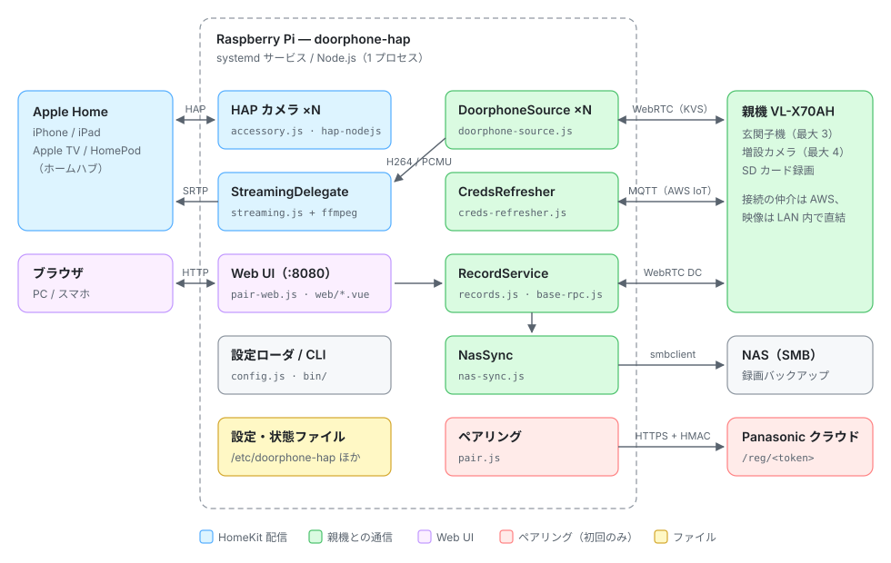
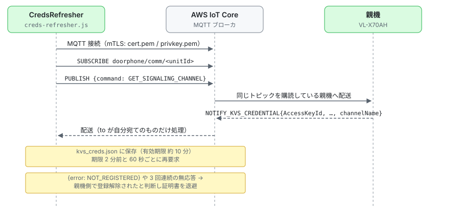
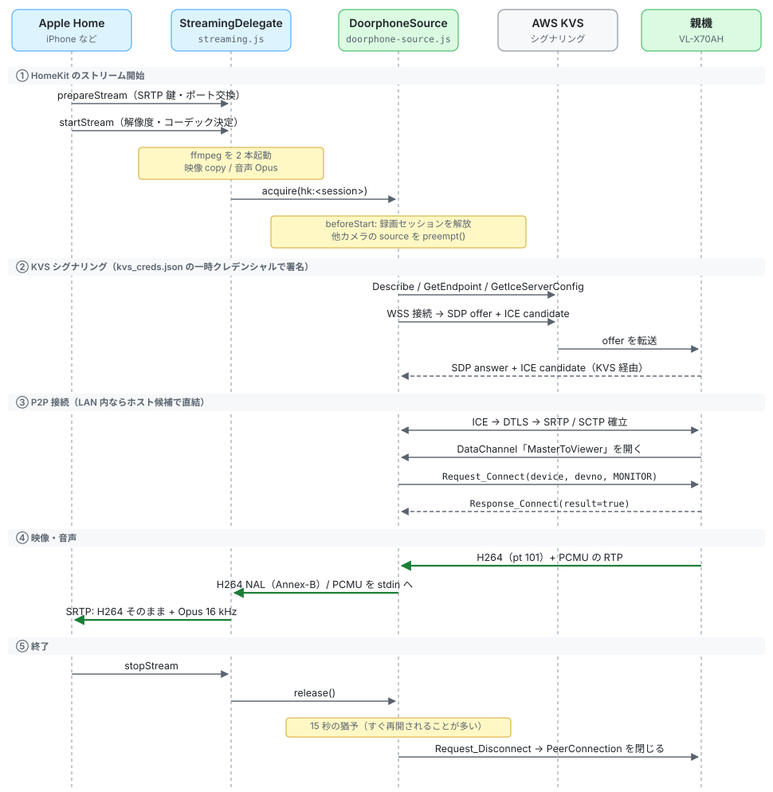
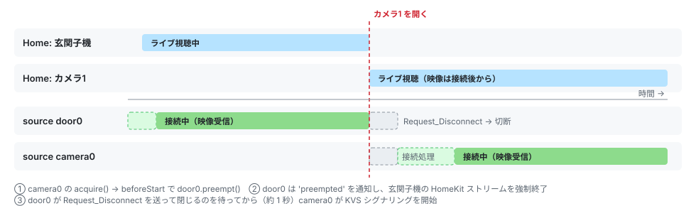
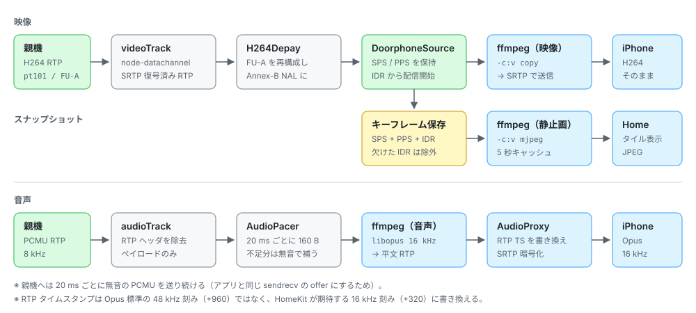
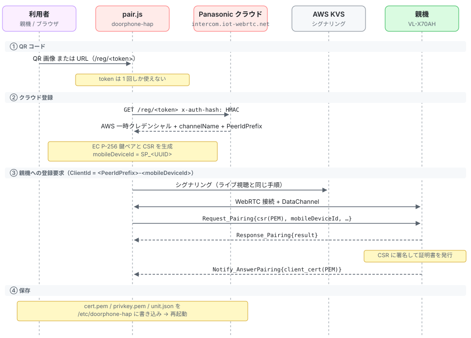

doorphone-hap ドキュメント
コードの詳細な説明
Panasonic のドアホン親機 VL-X70AH の映像を Apple Home のカメラとして見せるブリッジ
hap/ の内部構造を、処理の流れに沿って説明します。プロトコルをどう調べたかは
ドアホンの解析方法を参照してください。
1. 全体像
doorphone-hap は Raspberry Pi 上で動く 1 つの Node.js プロセスです。純正アプリ「ドアホンコネクト S」がスマホで行っていること （親機とのペアリング、クラウド経由のクレデンシャル取得、WebRTC での映像受信）を再実装し、受け取った映像を HomeKit Accessory Protocol（HAP）のカメラとして公開します。

hap/ のモジュールで、右列が親機側、左列が利用者側との通信を受け持ちます。親機との通信には 3 つの経路があります。
- AWS IoT（MQTT）：ペアリングで得たクライアント証明書で接続し、WebRTC 用の AWS 一時クレデンシャルを親機から受け取ります。
- AWS Kinesis Video Streams（KVS）WebRTC：一時クレデンシャルでシグナリングチャネルに接続し、親機と P2P で接続します。映像・音声は RTP、コマンドは DataChannel 上の Protobuf です。
- Panasonic クラウド（
/reg）：初回ペアリングのときだけ使います。
親機は同じ端末からのセッションを 1 本しか受け付けないため、ライブ視聴・録画取得・カメラ切り替えは すべて「親機の取り合い」を調停する形で実装されています（6 章、8 章）。
2. ファイル構成
| パス | 役割 |
|---|---|
hap/accessory.js | エントリポイント。各モジュールを組み立て、カメラごとに HAP アクセサリを公開する。 |
hap/bin/doorphone-hap | CLI（serve / pair / status / version）。systemd は serve で起動する。 |
hap/config.js | 設定ファイル（JSON）と環境変数を読み、既定値とマージする。 |
hap/creds-refresher.js | AWS IoT MQTT で一時クレデンシャルを取得し続ける。親機側の登録解除も検出する。 |
hap/doorphone-source.js | カメラ 1 台分のライブセッション。KVS WebRTC で親機に接続し、H264 と PCMU を受け取る。 |
hap/h264-depay.js | H264 の RTP をデパケタイズし、Annex-B 形式の NAL ユニットにする（RFC 6184）。 |
hap/streaming.js | HAP の CameraStreamingDelegate。ffmpeg を起動して HomeKit に SRTP で送る。スナップショットも担当。 |
hap/srtp.js | 最小限の SRTP 暗号化（AES_CM_128_HMAC_SHA1_80）。音声の RTP タイムスタンプを書き換えるために自前で持つ。 |
hap/base-rpc.js | 映像を伴わない「コマンド専用」の WebRTC セッション。request_id で応答を突き合わせる。 |
hap/records.js | 親機 SD の録画一覧・サムネイル・動画の取得とキャッシュ。親機の状態取得（GetState）もここ経由。 |
hap/nas-sync.js | 録画を定期的に SMB 共有へコピーする。 |
hap/pair.js | QR コードからのペアリング（CLI とライブラリの両用）。 |
hap/pair-web.js | Web UI の HTTP サーバと JSON / SSE API。 |
hap/web/ | Web UI 本体（Vue 3 の SFC をブラウザで直接読み込む。ビルド不要）。 |
hap/pickport.js | 空き UDP ポートを 1 つ確保するユーティリティ。 |
proto/gen/ | アプリから復元した Protobuf 定義（webrtc_if.proto ほか）。base-rpc.js が実行時に読み込む。 |
proto/*.proto | 初期に手書きした最小限の定義。pair.js が使う。 |
packaging/ | .deb のレイアウト、systemd ユニット、コンテナ内ビルド用スクリプト。 |
research/ | 解析時の試作コードとメモ（パッケージには含まれない）。 |
3. 起動の流れ
accessory.js は上から順に次のことを行います。
- 設定の読み込み：
CONFIG_PATH（既定/etc/doorphone-hap/config.json）を読み、config.jsの既定値とマージします。 - Web UI の起動：ペアリング前でも使えるよう、最初に HTTP サーバ（:8080）を立てます。
- ペアリング済みかの判定：
cert.pemもkvs_creds.jsonも無ければ、Web UI だけを動かして待ちます。 - CredsRefresher の開始：MQTT に接続して一時クレデンシャルを取得します（4 章）。
- RecordService と NasSync の生成：録画機能と NAS 同期を準備します。この時点では親機に接続しません。
- カメラの公開：
/var/lib/doorphone-hap/devices.jsonにキャッシュされた機器一覧（無ければ玄関子機 1 台）で アクセサリをすぐ公開し、クレデンシャル取得後に親機から最新の一覧を取り直します（6 章）。
終了処理は shutdownHooks 配列に登録しておき、SIGTERM / SIGINT や再ペアリング後の再起動のときにまとめて実行します。
Web UI から再ペアリングに成功すると、新しい証明書で起動し直すために終了コード 75 で終了し、systemd が
RestartForceExitStatus=75 で再起動します。
4. クレデンシャル更新（creds-refresher.js）
KVS に接続するには AWS の一時クレデンシャルが必要です。これは約 10 分で失効するので、ペアリングで得たクライアント証明書を使って AWS IoT Core の MQTT 経由で親機に定期的に発行してもらいます。

to）で自分宛てか判断します。- MQTT の clientId は
unit.jsonのmobileDeviceId（SP_<UUID>）です。トピックはdoorphone/comm/<unitDeviceId>。 - 送るメッセージは
{to: unitDeviceId, from: clientId, data: {command: "GET_SIGNALING_CHANNEL", payload: null}}。 - 応答
NOTIFY_KVS_CREDENTIALのpayload（AccessKeyId/SecretAccessKey/SessionToken/Expiration/channelName）をkvs_creds.jsonにそのまま書きます。他のモジュールは接続のたびにこのファイルを読みます。 - 失効の 2 分前に再要求するほか、60 秒ごとにも要求します。後者は登録解除の検出を兼ねます。
登録解除の検出
親機側でスマホ登録を解除しても通知は来ません。そのため次のどちらかで判断し、revoked イベントを出します。
- 応答の
payloadが{error: "NOT_REGISTERED"}だった。 - 要求への応答が 120 秒ずつ 3 回続けて無かった。
accessory.js は revoked を受けると証明書・秘密鍵・kvs_creds.json を *.revoked.<日時> にリネームし、
Web UI を「未ペアリング」表示に戻します。Web UI を開いたときにも checkNow() で即座に確認します。
5. ライブ接続（doorphone-source.js）
DoorphoneSource はカメラ 1 台分のライブセッションです。玄関子機なら
device = DEVICE_DOOR(1)、増設カメラなら DEVICE_CAMERA(2) で、devno は 0 始まりの番号です。

シグナリングと SDP
kvs_creds.jsonを読み、DescribeSignalingChannel→GetSignalingChannelEndpoint（Role = VIEWER）→GetIceServerConfigで ARN、WSS / HTTPS エンドポイント、TURN サーバを得ます。node-datachannelのPeerConnectionを、KVS の clientId をmobileDeviceIdにして作ります。 ペアリング時に登録した ID と一致しないと、接続はできても映像が 1 パケットも来ません。- offer は純正アプリと同じ形にします。これが違うと親機は映像を送ってきません。
m=audio（mid 0）：sendrecv。Opus / G722 / PCMU / PCMA と SSRC 付き。m=video（mid 1）：recvonly。VP8 と H264 2 種（pt 99 / 101）、それぞれ RTX 付き。a=ice-options:trickleを補います。
- offer と ICE 候補は KVS の WebSocket（
amazon-kinesis-video-streams-webrtcのSignalingClient）で送り、answer と候補を受け取ります。
node-datachannel は addTrack() や createDataChannel() を呼んだ瞬間にネゴシエーションを始めます。
onLocalDescription などを後から登録すると offer を取り逃がすので、すべて先に登録してからトラックを追加しています。
DataChannel と Request_Connect
SCTP が確立すると、親機が MasterToViewer という DataChannel を開いてきます。ただし親機は
こちらが作った DataChannel からしかコマンドを読みません。そこで自分で ViewerToMaster を作り、
そこに Protobuf の WebRtcMessage を書き込みます。親機は自分側 DC の DCEP OPEN に ACK を返さないので、
onOpen が来ないまま送ることになりますが、データは届きます。
モニター開始の Request_Connect は 11〜13 バイトなので手でエンコードしています（buildRequestConnect()）。
08 01 request_id = 1
10 01 version = VERSION_1（必須として扱う）
a2 06 <len> field 100 = request_connect
08 <device> device: 1 = DEVICE_DOOR, 2 = DEVICE_CAMERA
10 <devno> devno（0 のときは省略される）
20 02 type = TYPE_MONITOR
玄関子機 1 : 08011001a2060408012002
カメラ 1 : 08011001a2060408022002
カメラ 2 : 08011001a20606080210012002終了時は Request_Disconnect（08021001c20600）を送ってから PeerConnection を閉じます。
送らずに閉じると、親機の画面に「スマホで使用中」がしばらく残ります。
受信した RTP は自分で追加したトラックの onMessage に届きます（pc.onTrack はリモートが追加したトラックにしか発火しません）。
映像は H264Depay で NAL ユニットにして、登録された消費者（ffmpeg の stdin）に配ります。
新しい消費者には、最初の IDR が来たときにキャッシュ済みの SPS / PPS を前に付けて渡すので、ffmpeg のデコーダが途中から正しく始められます。
音声は RTP ヘッダを外した PCMU のペイロードを配ります。
オンデマンド接続
セッションを張っている間は親機の画面に「スマホで使用中」と出て、親機のモニター操作ができなくなります。 そこで HomeKit のストリームがある間だけ接続します。
acquire(tag)：利用者を登録し、未接続ならbeforeStartフック（録画セッションの解放、他カメラの preempt）を実行してから接続します。release(tag)：利用者を外します。誰もいなくなってから 15 秒待って切断します。HomeKit はストリームを頻繁に張り直すので、この猶予があると再接続の待ちが減ります。yieldIfUnused()：猶予期間で残っているだけのセッションを即座に閉じます。録画機能が親機を使いたいときに呼ばれます。- 利用中に切断された場合は 2 秒後に再接続し、接続の開始に失敗した場合も 3 秒ごとに再試行します。
壊れにくくする工夫
- 接続処理の世代番号：
start()は KVS の API を await している間にstop()されることがあります。 そのまま進むと誰も使わないセッションが親機を握り続けるので、_genを比較して古い接続処理は中断します。 - キーフレーム要求の保護：2 秒ごとと、パケットロス検出時に PLI（
requestKeyframe()）を送ります。 node-datachannel 0.33 のrequestKeyframe()は、トラックが開く前に呼ぶとネイティブ例外がそのまま抜けてプロセスごと異常終了します （JavaScript の try/catch では捕まりません）。そのためisOpen()を確認してから呼びます。 - 無音の送信：offer で音声を sendrecv にしているので、20 ms ごとに無音の PCMU（0xFF × 160 バイト）を親機へ送り続けます。
6. 複数カメラ
親機には玄関子機を最大 3 台、増設カメラを最大 4 台つなげられます。ブリッジは機器ごとに DoorphoneSource と HAP アクセサリを 1 組ずつ作ります。
機器一覧の取得
親機に Request_GetState を送ると、state.door.doors[] と state.camera.cameras[] が返ります。
配列の添字がそのまま devno で、未登録の枠は空のオブジェクトです。enable: true の枠だけを公開します。
door.doors = [{enable: true, name: "玄関子機1", …}, {}, {}]
camera.cameras = [{enable: true, name: "カメラ1"}, {}, {}, {}]
→ door0（DEVICE_DOOR, 0）, camera0（DEVICE_CAMERA, 0）一覧は devices.json にキャッシュします。起動時はまずキャッシュで公開し、親機から取り直して新しい機器があれば追加します。
取得に失敗したら 5 分ごとに再試行します。
HAP 上の識別子
1 台目の玄関子機は従来どおり accessory.name / username / port をそのまま使うので、既に Home に追加済みのアクセサリは影響を受けません。
それ以外の機器は MAC アドレス（username）とポートにオフセットを足します。名前は親機の登録名を使い、HomeKit が許さない記号は空白に置き換えます。
| 機器 | オフセット | username（既定値の場合） | ポート（既定値の場合） |
|---|---|---|---|
| 玄関子機 1（door0） | — | DC:D0:0F:00:00:01 | 47129 |
| 玄関子機 n（doorn） | +n | …:00:02, …:00:03 | 47130, 47131 |
| カメラ n（cameran） | +0x10+n | …:00:11 〜 …:00:14 | 47145 〜 47148 |
セッションの受け渡し
同じ clientId で 2 本のセッションを張ると、親機は両方を交互に切断します。そこで「後から開いたカメラが勝つ」方式で排他します。

beforeStart が、他の source の preempt() を待ってから接続を始めます。preempt() は preempted イベントを出し（StreamingDelegate がそれを受けて HomeKit の forceStopStreamingSession() を呼ぶ）、
利用者を空にして Request_Disconnect を送り、約 1 秒待ってから戻ります。録画機能から見たライブ中かどうかの判定
（isLiveActive）も、全カメラの source を見るようになっています。
7. HomeKit 配信（streaming.js）
HAP-NodeJS の CameraController に渡す StreamingDelegate が、HomeKit からの要求に応じて ffmpeg を起動します。
同時ストリーム数は 1 です（cameraStreamCount: 1）。

HomeKit とのやり取りは次の 3 段階です。
prepareStream：SRTP の鍵とソルト、SSRC、戻りポートを生成して返します。handleStreamRequest(start)：ffmpeg を映像用・音声用に 1 本ずつ起動し、source をacquire()して消費者として登録します。handleStreamRequest(stop)：ffmpeg を止めてrelease()します。reconfigure（ビットレート変更の要求）は無視します。 要求ごとに ffmpeg を作り直すと、約 27 秒で映像が止まっていたためです。
映像
ffmpeg -f h264 -use_wallclock_as_timestamps 1 -fflags +genpts -i pipe:0 \
-an -c:v copy -payload_type <pt> -ssrc <ssrc> -f rtp \
-srtp_out_suite AES_CM_128_HMAC_SHA1_80 -srtp_out_params <key+salt> \
"srtp://<iPhone>:<port>?rtcpport=<port>&pkt_size=1316"親機の H264（Baseline、1280×720）は再エンコードせず SRTP に詰め直すだけです。libx264 で再エンコードすると iPhone 側のデコーダが同期を外し続けました。 HomeKit が要求する解像度やビットレート（例: 299 kbps）は無視しますが、実用上問題はありません。
音声
親機の音声は 8 kHz の PCMU、HomeKit が受け付けるのは Opus です。次の順に変換します。
- AudioPacer：届いた PCMU を FIFO にため、壁時計に合わせて 20 ms ごとに 160 バイトずつ ffmpeg に書きます。 親機は無音区間でパケットを止める（VAD）ので、足りない分は無音（0xFF）で埋め、受信側のジッタバッファを枯らしません。
- ffmpeg：
-f mulaw -ar 8000を libopus（16 kHz、20 ms フレーム）に変換し、暗号化しない RTP でループバックの UDP に出します。 - AudioProxy：RTP タイムスタンプを書き換えてから
srtp.jsで暗号化し、iPhone に送ります。
RFC 7587 では Opus の RTP タイムスタンプは常に 48 kHz 刻み（20 ms で +960）ですが、HomeKit は交渉したサンプルレートの刻み（16 kHz なら +320）を期待します。
そのままだと 20 ms のパケットを 60 ms 分と解釈し、間に 40 ms の無音が入って音が途切れます。ffmpeg では直せないため、自前で SRTP を実装しています
（go2rtc の repackToHAP20 と同じ考え方）。
スナップショット
Home のタイル表示用の静止画は、source が覚えている最後のキーフレーム（SPS + PPS + IDR）を ffmpeg で JPEG にして返します。 同じ解像度の要求は 5 秒キャッシュします。キーフレームが無い（まだ一度もライブを見ていない）ときは 1×1 の灰色 JPEG を返します。
玄関子機の IDR は約 150 KB あり、RTP 約 150 パケットに分割されて届きます。H264Depay は FU-A の途中で RTP シーケンス番号が飛んだら
NAL に damaged の印を付け、source はその IDR をキャッシュしません。欠けた IDR は下半分が崩れた画像になり、次にライブを見るまで残ってしまうためです。
8. 録画（BaseRpc / RecordService）
BaseRpc は Request_Connect を送らない WebRTC セッションです。映像は流れませんが、DataChannel で Protobuf のコマンドをやり取りできます。
メッセージは proto/gen/webrtc_if.proto を protobufjs で実行時に読み込んで組み立てます。
request(cmd, body)はrequest_idを採番して送り、同じ ID のresponse*が来たら解決します。ID が一致しない通知はnotifyイベントになります。- nudge：親機の SCTP は、こちらが次に何か送るまで応答を出さないことがあります（大きな GetFile の応答で顕著）。 そこで応答待ちの間、同じメッセージを 1.5 秒ごとに再送します。重複した応答は捨てられます。
RecordService は録画機能の窓口です。
- 操作はすべて直列化し、最初に
Request_GetRecordControlで録画の操作権を取ります。最後の操作から 20 秒で操作権を返して切断します。 - 一覧は
Request_GetRecordList、ファイルはRequest_GetFile（64 KB ずつ）で取得します。録画は普通の MP4（H264 + AAC 16 kHz）です。 - 親機の AAC には規格外のフレームが混じっていて Chrome が再生を止めるため、映像はコピーし音声だけ ffmpeg で再エンコードしてからキャッシュします（上限 500 MB、古い順に削除）。
- ライブ視聴中は
LiveBusyErrorを返して親機を譲ります。ライブ開始時にはsuspend()でセッションを即座に解放します。 - GetFile がタイムアウトしたら、親機が古いチャンクを送り続けて次の要求を壊すのを防ぐため、セッションを張り直します。
unitState()はRequest_GetStateを送り、機器一覧の取得に使われます。
9. NAS バックアップ（nas-sync.js）
録画を一定間隔（既定 60 分）で SMB 共有にコピーします。マウントせず smbclient を使うので、root 権限は要りません。
- 設定は
/etc/doorphone-hap/nas.jsonに分けて置き、Web UI から編集します。実行のたびに読み直すので再起動は要りません。 - 保存先は strftime 形式のテンプレート（既定
%Y%m%d/%H%M%S、拡張子は自動）。ディレクトリは 1 階層ずつmkdirします。 - パスワードは 0600 の一時ファイルで
smbclient -Aに渡し、プロセス一覧に出ないようにします。 - アップロード済みの録画は
nas-state.jsonに記録し、二重に送りません。初回は既定で 7 日前まで遡ります。 - 読めない録画（SD の不良ブロックと思われる）は 3 回失敗したら以後スキップし、全体を止めません。
- 自動削除を有効にすると、自分がアップロードしたファイルのうち指定日数を過ぎたものだけを消します。
10. ペアリング（pair.js）
新しい「スマホ」として親機に登録し、クライアント証明書を発行してもらいます。CLI（doorphone-hap pair）と Web UI の両方から呼ばれます。

- QR の読み取り：画像を jsQR で読みます（HEIC は macOS の
sipsで変換。RPi では JPEG / PNG を使う）。ブラウザから使う場合は Web UI 側でも先に読み取りを試みます。スマホ写真は大きいので、数種類の縮小・中央切り出しを順に試します。 - クラウド登録：URL 末尾のトークンを HMAC-SHA256 で署名して
x-auth-hashヘッダに入れ、GET /reg/<token>します。 HMAC 鍵はアプリに埋め込まれた固定値ですが、リポジトリには含めず/etc/doorphone-hap/hmac.keyから読みます（取り出し方は 解析方法）。 - 鍵と CSR：EC P-256 の鍵ペアを作り、CSR を PEM で作ります。Subject はアプリと同じく、区切り無しで連結した 1 つの CN
（
CN=IoT ApplicationOU=Organizational UnitO=OrganizationC=Country）です。 - 親機への登録：clientId を
<PeerIdPrefix>-<mobileDeviceId>にして KVS に接続し、Request_Pairingを送ります。csrとclient_certは proto 上string型で、中身は PEM です（DER を送ると親機は黙って捨てます）。 - 保存：
Notify_AnswerPairingの証明書をcert.pem、秘密鍵をprivkey.pem、unitDeviceIdとmobileDeviceIdなどをunit.jsonに書きます。
トークンは 1 回しか使えないので、QR を読んでから登録完了までを 1 つの処理で一気に行います（全体のタイムアウトは 120 秒）。
親機の応答が遅いときは Request_Pairing を再送しますが、送りすぎると親機が 1 回目を中断する（REASON_INTERRUPT）ので回数を絞っています。
11. Web UI と API（pair-web.js, web/）
Web UI は Vue 3 の SFC（App.vue、Records.vue、Nas.vue）を vue3-sfc-loader でブラウザ側でコンパイルして表示します。ビルド工程はありません。
タブは「録画」「NAS」「状態」の 3 つで、ペアリング前は「状態」だけが使えます。
| メソッド | パス | 内容 |
|---|---|---|
| GET | /api/state | ペアリング状態、カメラごとの HomeKit 登録状況・セットアップ QR（SVG）・URI。 |
| GET | /api/events | Server-Sent Events。状態が変わるたび（HomeKit のペアリング、証明書ファイルの変更など）に /api/state と同じ内容を送る。 |
| POST | /api/pair | QR 画像（multipart）または URL でペアリングを実行し、ログを返す。成功後にプロセスを再起動する。 |
| GET | /api/records | 録画一覧（offset / limit）。 |
| GET | /api/records/head | 最後に確認した最新録画。親機には接続しないので、ポーリング用。 |
| GET | /api/records/thumb/<id>/api/records/video/<id> | サムネイル JPEG / MP4。Range リクエストに対応（Safari での再生に必要）。一覧に出た ID しか受け付けない。 |
| GET / POST | /api/nas | NAS 設定と同期状態の取得 / 設定の保存。 |
| POST | /api/nas/sync | 今すぐ同期する。 |
12. 設定とファイル
config.json
| キー | 既定値 | 説明 |
|---|---|---|
accessory.name | Doorphone | 玄関子機 1 のアクセサリ名。 |
accessory.username | DC:D0:0F:00:00:01 | HAP の識別子（MAC 形式）。他のカメラはこれにオフセットを足す。 |
accessory.pincode | 031-45-154 | セットアップコード（全カメラ共通）。 |
accessory.port | 47129 | HAP の TCP ポート。他のカメラはこれにオフセットを足す。 |
doorphone.*Path | /etc/doorphone-hap/… | クレデンシャル、証明書、秘密鍵、unit.json の場所。 |
ffmpeg.path | ffmpeg | ffmpeg のパス。 |
storage.persistPath | /var/lib/doorphone-hap/persist | HAP のペアリング情報。親ディレクトリに録画キャッシュや devices.json も置く。 |
storage.nasConfigPath | /etc/doorphone-hap/nas.json | NAS 設定。 |
web.host / web.port | 0.0.0.0 / 8080 | Web UI。web.enabled: false で無効化。 |
ACC_NAME、ACC_MAC、ACC_PIN、ACC_PORT、WEB_PORT などの環境変数で個別に上書きもできます。
実行時のファイル
| パス | 内容 |
|---|---|
/etc/doorphone-hap/cert.pem, privkey.pem | 親機が発行したクライアント証明書と秘密鍵（有効期限 50 年）。 |
/etc/doorphone-hap/unit.json | unitDeviceId、mobileDeviceId、ペアリング日時など。 |
/etc/doorphone-hap/kvs_creds.json | AWS 一時クレデンシャルと channelName。約 10 分ごとに書き換わる。 |
/etc/doorphone-hap/hmac.key | ペアリング用の HMAC 鍵（利用者が用意する）。 |
/var/lib/doorphone-hap/persist/ | HAP-NodeJS のペアリング情報（iPhone 側の公開鍵など）。 |
/var/lib/doorphone-hap/devices.json | 親機から取得した機器一覧のキャッシュ。 |
/var/lib/doorphone-hap/records/ | 録画のサムネイル・動画キャッシュと nas-state.json。 |
13. パッケージと運用
make debで、linux/arm64 のコンテナ（Applecontainer/ Docker / Podman を自動選択）の中でnpm installし、 ネイティブモジュール込みのdoorphone-hap_<ver>_arm64.debを作ります。バージョンはpackaging/deb/DEBIAN/controlのVersionだけで管理します。- インストール先は
/opt/doorphone-hap。postinstがサービス用ユーザーdoorphone-hapを作り、/etcと/var/libの権限を整えてサービスを有効化します。 - systemd ユニットは
ProtectSystem=strictなどで書き込み先を/etc/doorphone-hapと/var/lib/doorphone-hapに限定しています。 - ログは
journalctl -u doorphone-hap -fで見られます。[source camera0]のように、カメラごとに接頭辞が付きます。
14. 実装上の注意点
実装中に実際にはまった点です。コードを変えるときに同じ問題を踏まないよう、まとめておきます。
| 項目 | 守ること |
|---|---|
| KVS の clientId | ライブも録画も unit.json の mobileDeviceId を使う。違うと接続はできても映像が来ない。 |
| 同時セッション | 同じ clientId で 2 本張らない。親機は両方を交互に切断する。 |
| DataChannel | コマンドは自分で作った DC に送る。onOpen を待たない（親機は DCEP ACK を返さない）。 |
| Request_Connect | version = VERSION_1 を必ず入れる。玄関子機は DEVICE_DOOR、増設カメラは DEVICE_CAMERA。 |
| SDP | 音声 sendrecv + 映像 recvonly の、アプリと同じ形の offer にする。 |
| node-datachannel | コールバックはトラック追加の前に登録する。requestKeyframe() は isOpen() を確認してから呼ぶ。 |
| DC の応答待ち | 親機への要求には nudge（同じ要求の再送）を付ける。 |
| 映像 | ffmpeg は -c:v copy。再エンコードしない。 |
| 音声 | Opus の RTP タイムスタンプは交渉したサンプルレート刻みに書き換える。 |
| HomeKit の reconfigure | ffmpeg を作り直さずに無視する。 |
| ペアリングの proto | csr / client_cert は PEM 文字列。Java の getter の型（String / ByteString）で string / bytes を判断する。 |
| セッションの保持 | 使い終わったら Request_Disconnect を送って閉じる。張りっぱなしにすると親機のモニターが使えない。 |